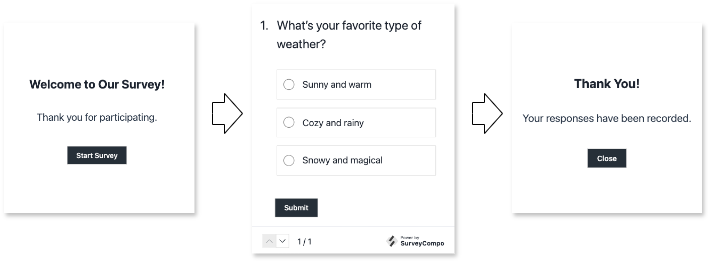

Surveys
SurveyCompo offers a powerful and versatile way to design surveys using a flexible data model written in JSON. This section introduces you to the key building blocks of a SurveyCompo survey.
Survey Structure
Imagine your SurveyCompo survey as a journey. Here's a visual breakdown of the key elements:
- Start Screen (Optional)
-
Welcomes users, sets the stage, and provides initial instructions.
- Survey Pages
-
The heart of your survey, where questions are asked and data is collected. Each page is made up of one or more "Blocks".
- Blocks
-
The fundamental units that hold your questions. They contain input controls where users provide their responses. SurveyCompo offers a variety of input controls, from text boxes to specialized elements like Likert scales.
- End Screen (Optional)
-
Signal the end of the survey.
SurveyCompo offers two customizable end screens to manage your survey flow.
- Completion Screen: Thanks respondents and may provide further instructions.
- Abort Screen: Informs users if they don't meet survey criteria.
The User Flow

Imagine a user journey through the survey:
- Invitation: The optional Start Screen introduces the survey.
- Questions and Answers: Users navigate through Survey Pages, providing responses in Blocks.
- Outcome:
- Success: Upon completion, they see the Completion Screen.
- Disqualification: If ineligible, they are directed to the Abort Screen.
The Survey Data Model
SurveyCompo uses JSON (JavaScript Object Notation) to define your survey's structure. Think of JSON as a blueprint, using key-value pairs to describe each survey element and its properties. Here's a simplified example:
Info
Why Arrays for Screens? SurveyCompo supports multiple start, completion, and abort screens, allowing you to tailor the survey experience based on user responses..